Original paper. How NVIDIA does it. Notes taken from the UTwente slides.
Learn ray-tracing. Like actually; this is the core of this method. I can definitely see it applied in gaming. fucking mega. Ray-Tracing in One Weekend.
PyTorch Implementation. Official Implementation Github.
Explanatory Video from Google (MIT) — the actual authors themselves. Fucking mega..
The concept itself sounds awesome. Let’s see how it looks on paper. Also, Steven pointed out how this must have been a catalyst of all the fly-through videos we see today.
Before we start, NeRF is data hungry. It simply memorizes the world, but it’s unable to generalize. If we give it a set of drums, it will know that set and not another one.
NERF
- Generating rays from camera poses
- Using an MLP to predict color and density for each point in space
- Rendering novel views of a scene with differentiable volumetric rendering
- Apply NeRF techniques for 3D reconstruction tasks.
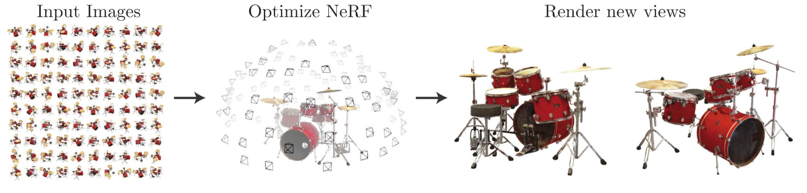
Rendering
Rendering is the process of generating a photorealistic or non-photorealistic image from input data such as 3D models
- Forward rendering means taking a scene defined with geometry, materials, cameras, and lights, and generating an image.
- Inverse rendering starts from the rendered image, compares it to some form of ground truth image, and updates the parameters of the scene elements with the loss that compares the images.
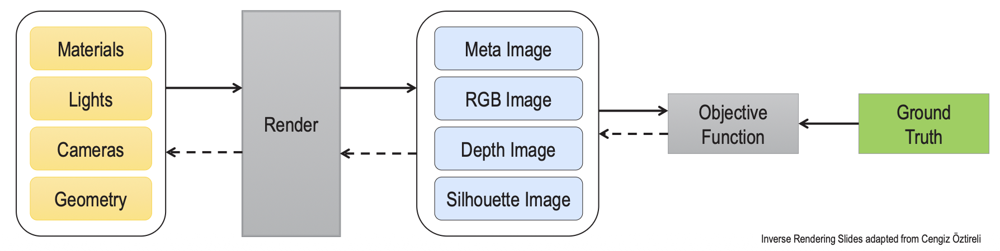
Volumetric Rendering
Radiance
Radiance is some amount of light (differential energy) that you can see per unit area, with a solid angle and wavelength .
- (position, direction, wavelength)
Radiance along an unblocked ray is constant (energy conservation). The “Light Field” is the radiance for every possible ray. I still don’t understand what this all means..
Novel View Synthesis:
Input of NeRF is 5D data
- input is a single continuous 5D coordinate
- spatial location
- and viewing direction (, )
- We can omit the wavelength in the inputs. We only need 5 parameters.
- output is the volume density and view-dependent emitted radiance at that spatial location.
- Volume density represents how much “stuff” is at a specific 3D point (). If the density is high, the point is likely part of a solid object; if it is zero, the point is empty space.
- Radiance is simply the color and brightness of the light emitted from a specific point () in a specific direction ().
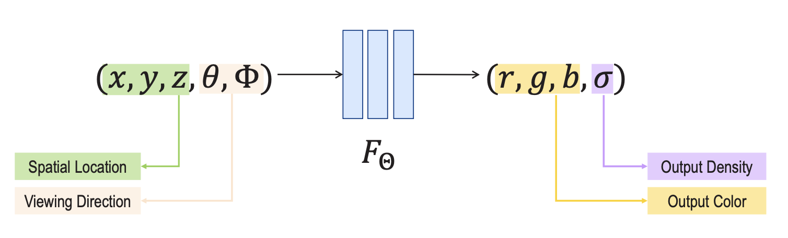
Now that we have the color and density (r,g,b,), we calculate the color of every camera ray using:
explaining the integral: as a camera ray travels through the “cloud”, it collects color (c) from every point. However, that color is weighted by the density () at that spot and the transmittance (T).
- Transmittance is essentially “how much light can still reach the camera from this point without being blocked by objects in front of it”. If the ray hits a high-density wall, the transmittance for anything behind that wall drops to zero.
- No hits before is equal to integral over density up until .
- Volumetric Density is the probability that the ray stops in a small interval around .
- If a ray traveling through the scene hits a particle at , we return this radiance/color .
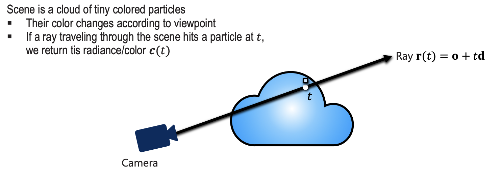
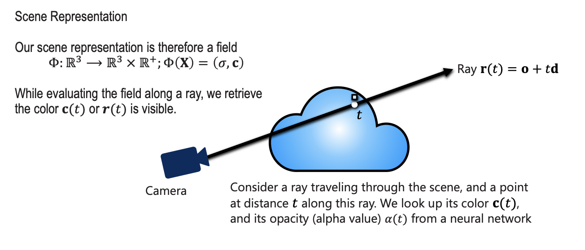
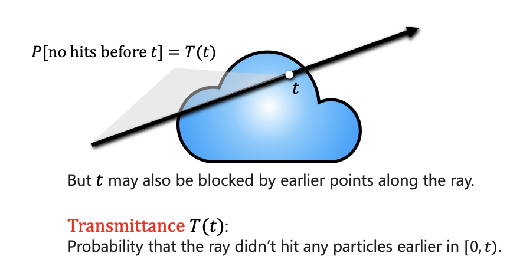
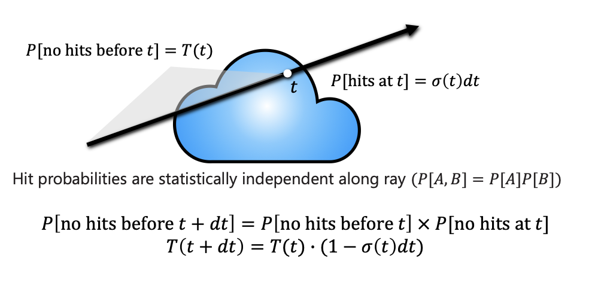
Absorption = something that doesn’t let light get through
Scattering = like a glass that splits the light in different direction
Emission = Something related to energy that produces light?
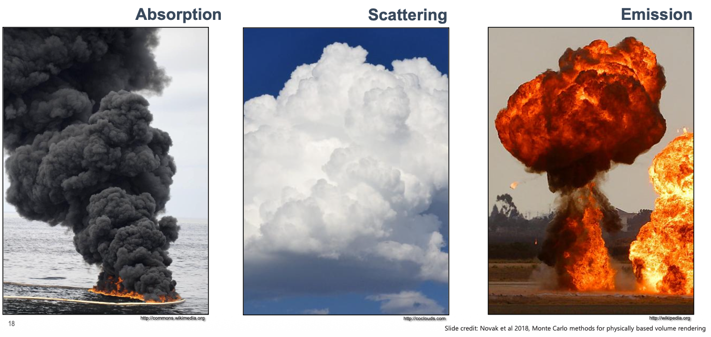
Volumetric Formulation for NeRF
is the probability density function (PDF) that represents the probability that a ray stops at .
Expected color along a ray is a convex combination of colors . By now I should be able to understand what each of those terms represent.
To implement NeRF in practice, we can’t solve an infinite integral on a computer. Instead, we discretize the ray into segments to numerically estimate the accumulated color.
Computing the color for a set of rays through the pixels of an image yields a rendered image.
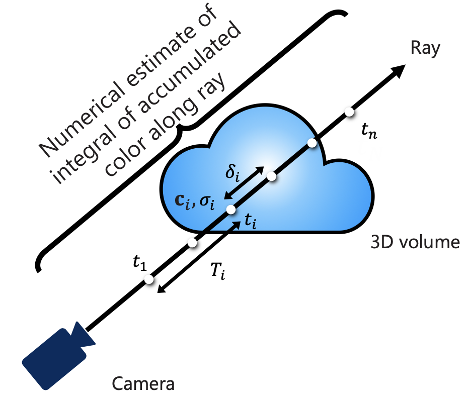
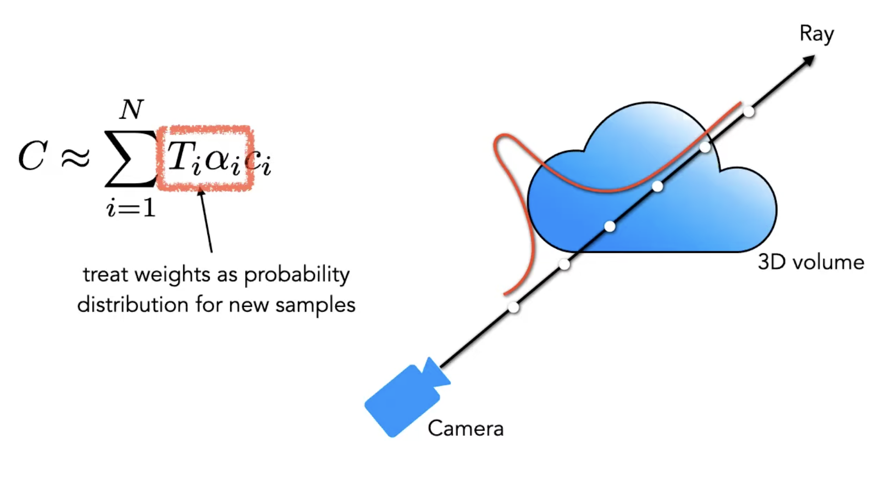
From the author: we first lay down points evenly and those points are supposed to tell us where the stuff is. If we get more opaque values at the beginning of the ray, then we know something is there and we can focus on that area. And so we “train” the model to understand this. (I say “train” because an MLP is really small. It’s more about optimizing the weights)
Neural Networks as representations
Basically, slap a coordinate-based MLP to give us the (r,g,b) for each (). Instead of saving colors in a grid, you train a neural network to behave like a lookup table: you give it a coordinate, and it “remembers” the color and density at that spot.
The Spectral Bias Problem
A standard neural network has a natural “Spectral Bias,” which means it is biased toward learning smooth, low-frequency functions first. When you try to train a basic MLP to represent an image or a 3D scene directly from raw coordinates (x,y,z), the results are always blurry. The network can easily learn the general “blobs” of color but struggles to learn sharp edges, fine textures, or small details. This is why the “Naive Approach” fails
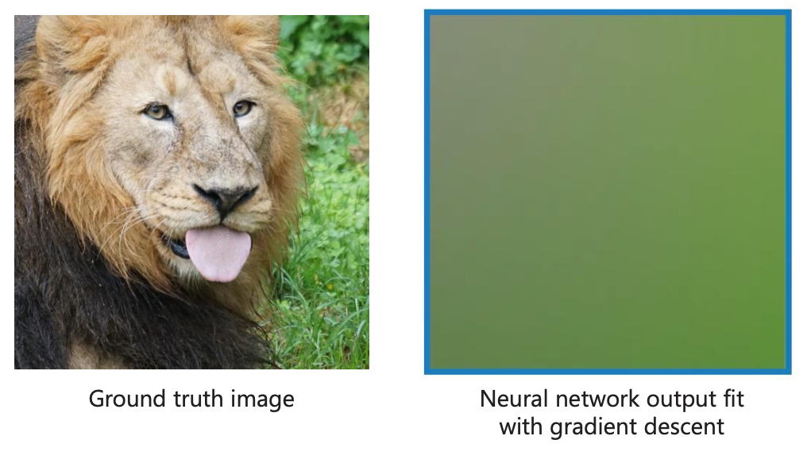
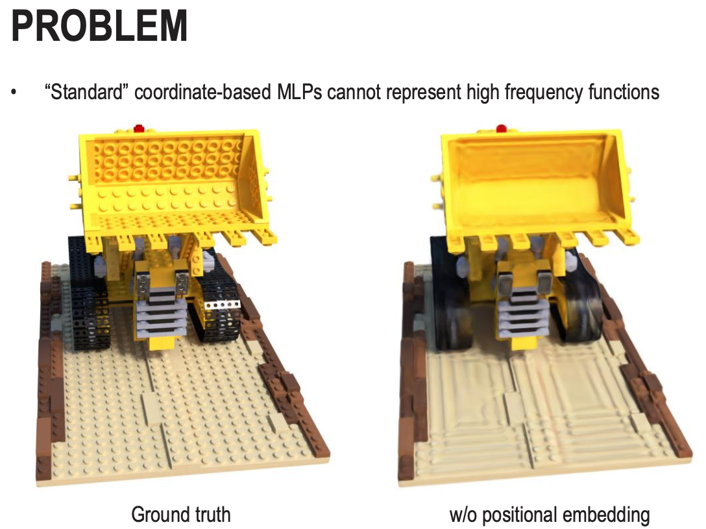
The solution in this case is to make use of the positional encoding concept from transformers(the sin and cos functions with exponentially increasing frequencies) to map the low-dimensional input coordinates into a much higher-dimensional space before they enter the network. The lower frequencies () help the network understand the overall shape, while the higher frequencies () provide the “hooks” necessary for the network to anchor sharp details and complex textures. This is such a nice application of this concept..
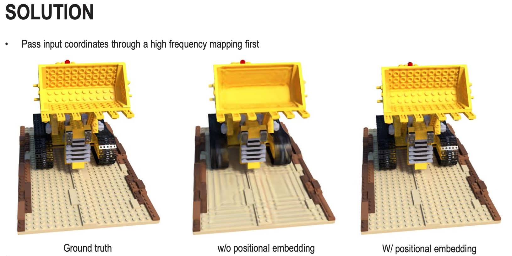
Up until now, NeRF = volume rendering + coordinate-based network
Including the ray direction in the input to the MLP allows for capturing and rendering view-dependent effects (e.g., shiny surfaces)
So we’re going to store the values along the ray, and put it all together. The loss function is your classical MSE.
Safe to say that when I’m using lots of pictures; I don’t really master the concept. But this concept is so vast and includes so many terms like SfM, ray tracing, ray marching, etc. It’s very advanced stuff.
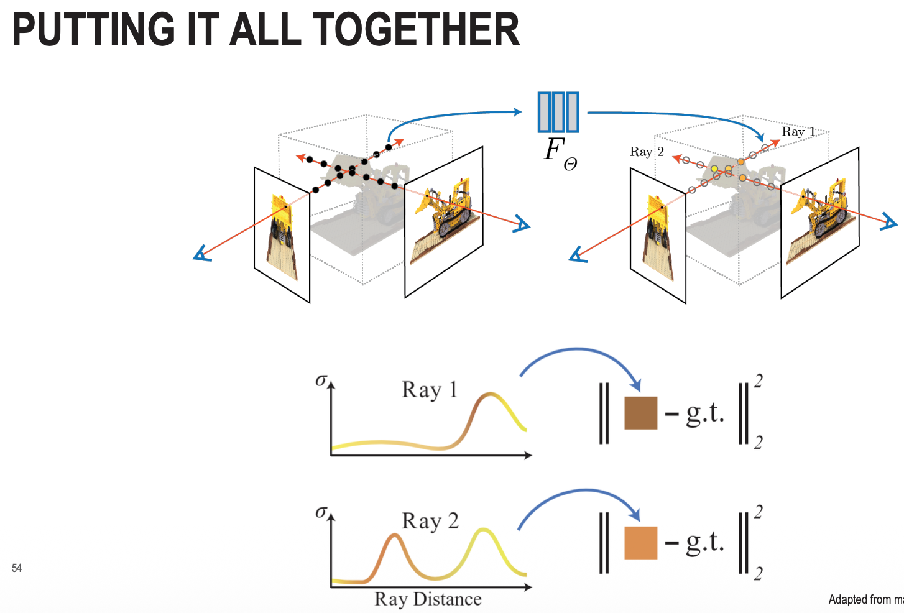
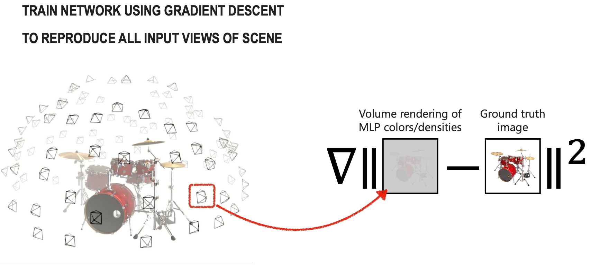
A quick summary of NN representations in NeRF. From Gemini.
- Ray Sampling: For every pixel in a target image, a camera ray is cast into the scene.
- Point Evaluation: Multiple points along that ray are sampled. Each 3D point () and the viewing direction (, ) are passed through the Positional Encoding and then the MLP.
- Output Generation: The MLP outputs the color () and density () for each point.
- Volume Rendering: These values are integrated along the ray to calculate the final pixel color.
- Loss Calculation: The rendered color is compared against the ground truth using a squared error loss.
- Optimization: The network uses gradient descent to update its weights until it can accurately reproduce the scene from any of the input camera views.
Notes from class
Structure from Motion(SfM): SfM aims to reconstruct the 3D structure of a scene and the camera’s motion from a sequence of images. This is how they do the motion prediction.
The mathematics is not at the exam